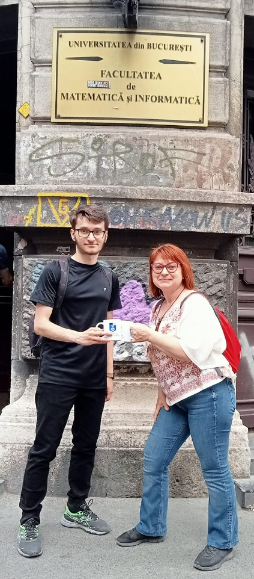
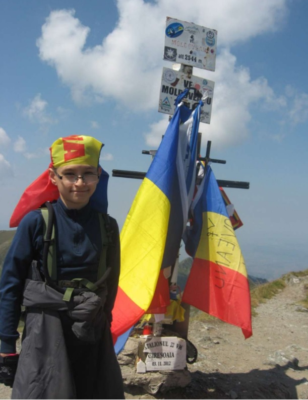
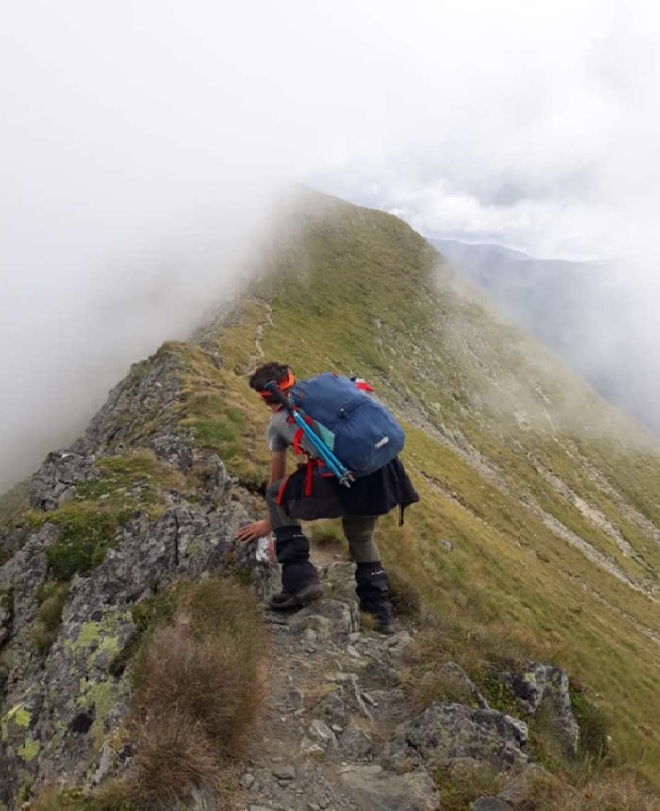
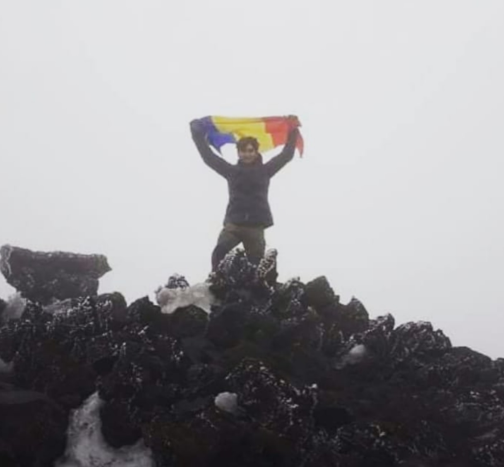

Dobrin Ionuț
Dobrin Ionuț
Dobrin Ionuț
Dobrin Ionuț
My name is Dobrin Ionuț-Alexandru, and I am just a simple guy from Romania, born and raised in a relatively small town, Galați, and I have recently
moved to Bucharest because I became a student at University of Bucharest in Mathematics and Computer Science.
My dream is to have a successful career in Computer Science, and to have a positive impact in the world, by building websites (just like this one), and applications that can address real life problems.
Sweden, Uppsala, 2022
A big part of my life (besides chess) has been travelling, especially exploring the ever so beautiful mountains that Romania has to offer. I have been to other European countries too, like Italy, UK, Sweden and Austria, and I have been extremely impressed with their beautiful cities and natural landscapes. I also enjoy practising sports like football, basketball and running marathons from time to time.
Mt. Moldoveanu (2544m), highest peak in Romania, 2015 Mt. Lespezi (2516m), Fagarasi, Romania, 2018 Mt. Etna(3357m), Sicily (Italy), 2021
  